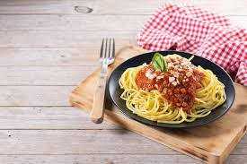

Home
Bolognese

Spaghetti Bolognese
Ingredients
For the sauce:
- 2 tbsp olive oil
- 1 onion, finely chopped
- 2 cloves garlic, minced
- 500 g ground beef
- 400 g canned chopped tomatoes
- 2 tbsp tomato paste
- 1 tsp oregano
- 1 tsp basil
- Salt and pepper
Other:
- 400 g spaghetti
- Grated parmesan cheese
Instructions
- Heat olive oil in a pan. Cook onion until soft, then add garlic.
- Add ground beef and cook until browned.
- Stir in tomatoes, tomato paste, herbs, salt, and pepper. Simmer for 20 minutes.
- Cook spaghetti in salted boiling water according to package instructions.
- Drain pasta and serve with the sauce on top.
- Sprinkle with grated parmesan cheese.
Tips
- Add a splash of red wine for deeper flavor.
- Let the sauce simmer longer for a richer taste.
- Serve with fresh basil if available.